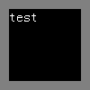

根据 W3C CSS2.1 规范中规定了非替换绝对定位元素的宽度计算，其中提到：
The constraint that determines the used values for these elements is:'left' + 'margin-left' + 'border-left-width' + 'padding-left' + 'width' + 'padding-right' + 'border-right-width' + 'margin-right' + 'right' = width of containing blockOtherwise, set 'auto' values for 'margin-left' and 'margin-right' to 0, and pick the one of the following six rules that applies. ... 5. 'width' is 'auto', 'left' and 'right' are not 'auto', then solve for 'width'
绝对定位元素的宽度计算遵从上面引用框中的等式。但除去下列情况之外：
第五条规则指出，'width' 为 "auto" ，'left'、'right' 不是 "auto" ，则计算 'width' 的值。
对于非替换绝对定位的高度计算，也有类似的限制：
For absolutely positioned elements, the used values of the vertical dimensions must satisfy this constraint:'top' + 'margin-top' + 'border-top-width' + 'padding-top' + 'height' + 'padding-bottom' + 'border-bottom-width' + 'margin-bottom' + 'bottom' = height of containing blockOtherwise, pick the one of the following six rules that applies. ... 5. 'height' is 'auto', 'top' and 'bottom' are not 'auto', then 'auto' values for 'margin-top' and 'margin-bottom' are set to 0 and solve for 'height'
即 'height' 为 "auto" ，'top'、'bottom' 不是 "auto" ，则 'margin-top'、'margin-bottom' 为 0，计算 'height' 的值。
关于 非替换绝对定位元素的宽度及高度计算 的更多信息，请参考 CSS2.1 规范 10.3.7 和 10.6.4。
IE6 及 IE7/8 的混杂模式下，非替换绝度定位元素当指定了 'left' 及 'right'，而 'width' 为默认值 "auto" 。此时浏览器无法正确地计算出 'width' 的值，对于高度的计算也是如此。
此问题可能导致绝对定位元素的宽度和高度在 IE6 IE7(Q) IE8(Q) 中与其他浏览器有很大的差异。
| IE6 IE7(Q) IE8(Q) | 无法根据绝对定位元素四个方向的偏移量自动计算其尺寸 |
在 IE6 IE7(Q) IE8(Q) 中，若一个非替换绝对定位元素没有显式设定 'width' 和 'height' 特性，则其无法如规范所述根据其四个方向的偏移量自动计算其尺寸。
分析以下代码：
<!DOCTYPE html>
<html>
<head>
</head>
<body>
<div style="background:gray; width:100px; height:100px; position:relative;">
<div id="d" style="background:black; position:absolute; left:10px; right:10px; top:10px; bottom:10px; color:white;">test</div>
</div>
</body>
</html>
上面代码中，一个 'position' 为 relative 的 100x100 的灰色背景 DIV 元素内包含一个黑色背景的 DIV 元素【d】，【d】为非替换绝对定位元素，其 'top'、'right'、'bottom'、'left' 均为 10px，且没有显式的设置 'width' 及 'height'。
在各浏览器中效果如下：
| IE6 IE7(Q) IE8(Q) | IE7(S) IE8(S) Firefox Chrome Safari Opera |
|---|---|
|  |
若能为非替换绝对定位元素设定固定的宽度及高度，则尽量不使用此方式自动计算绝对定位元素的 'width' 及 'height'；若无法避免使用此方式，则可以通过判断浏览器，仅在 IE6 中使用 CSS Expression 控制绝对定位元素的宽度及高度。
使用 CSS Expression 控制绝对定位元素的宽度及高度的参考代码如下：
<!DOCTYPE html>
<html>
<head>
<style>
#d {
background-color: black;
position: absolute;
left: 10px;
right: 10px;
top: 10px;
bottom: 10px;
color: white;
_width: expression(
parseInt(this.offsetParent.currentStyle.width)
- parseInt(this.currentStyle.left)
- parseInt(this.currentStyle.right)
);
_height: expression(
parseInt(this.offsetParent.currentStyle.height)
- parseInt(this.currentStyle.top)
- parseInt(this.currentStyle.bottom)
);
}
</style>
</head>
<body>
<div style="background-color:gray;width:100px;height:100px;position:relative">
<div id="d">test</div>
</div>
</body>
</html>
| 操作系统版本: | Windows 7 Ultimate build 7600 |
|---|---|
| 浏览器版本: |
IE6 IE7 IE8 Firefox 3.6.2 Chrome 5.0.360.4 dev Safari 4.0.5 Opera 10.51 |
| 测试页面: | pos_auto.html pos_auto_fix_IE6.html |
| 本文更新时间: | 2010-07-06 |
position absolute 绝对定位 left right top bottom width height